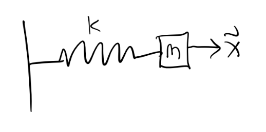

Lagrangian Mechanics
While Newton’s Laws give a complete description of classical mechanics, they can be cumbersome to apply when complicated forces are present. Lagrangian mechanics is an alternative but completely equivalent approach to Newtonian mechanics that greatly simplifies many problems, particularly where constraint forces are present. Not only that, but unlike Newtonian mechanics, the Lagrangian formulation can be extended to many other areas of physics, including quantum mechanics and general relativity.
Configuration Space
Many forces acting on a system do no work. They serve only to keep particles confined to some surface in space. Such forces are called forces of constraint. Examples of forces of constraint include the tension in a string and the normal force keeping an object on a physical surface.
Suppose we have a system of \(N\) particles with positions \(\mathbf{x}_1, \mathbf{x}_2, \cdots, \mathbf{x}_N\) respectively. Taken together, these positions can be thought of as defining a trajectory in the \(3N\)-dimensional space \(\mathbb{R}^{3N}\). A holonomic constraint is a constraint that keeps the \(N\) particles confined to some lower-dimensional sub-manifold \(\mathcal{Q}\) of \(\mathbb{R}^{3N}\). Equivalently, it’s a (possibly time-dependent) function of the form \[ f(\mathbf{x}_1, \mathbf{x}_2, \cdots, \mathbf{x}_N, t) = 0. \] The dimension of \(\mathcal{Q}\) is \(n=3N-C\), where \(C\) is the total number of constraints on the system. These are the number of degrees of freedom of the system. This sub-manifold is called the configuration space of the system. Since \(\mathcal{Q}\) is \(n\)-dimensional, we should be able to parametrize it with \(n\) coordinates \(q_1, q_2, \cdots, q_n\). We call these generalized coordinates. They’re not ordinary coordinates in real space. They’re a way of describing where in configuration space the system is at a given point in time.
Holonomicity requires that we be able to find a 1-1 map going back and forth between generalized coordinates and the position vectors, \[ q_i = q_i(\mathbf{x}_1, \mathbf{x}_2, \cdots, \mathbf{x}_N, t), \quad \mathbf{x}_\alpha = \mathbf{x}_\alpha(q_1, q_2, \cdots, q_n, t). \] When the holonomic constraint isn’t time-dependent, they’re called scleronomic constraints. Otherwise they’re called rheonomic constraints. A system that’s not holonomic is called non-holonomic.
As an easy example, consider the simple pendulum. Since there’s only one particle, \(N=1\). Since the length of the pendulum is fixed, that’s one constraint. Since the motion is confined to a plane, that’s another constraint. We thus have \(n=3N-C=3-2=1\) degrees of freedom, which we can of course take to be the angle \(\theta\).
A more interesting example is the rigid body. A rigid body is a system of \(N\) particles whose particles are always a fixed distance apart, i.e. \(d_{ij} = |\mathbf{x}_i - \mathbf{x}_j|\) is fixed for all \(i, j\). This fixed distance requirement introduces a lot of constraints on the system. To see this, suppose \(N=4\). Then there are \(C=6\) constraints, since each particle must connect to each other particle. This means there are \(n=3N-C=6\) degrees of freedom.

It turns out this fact extends to rigid bodies with arbitrarily many particles as well since adding a new particle gives 3 more coordinates, but also 3 more constraints. A rigid body will always have exactly 6 degrees of freedom, which we usually take to be the 3 center of mass coordinates and the three Euler angles.
Virtual Work
Suppose we have a system of \(N\) particles in mechanical equilibrium, so \(\mathbf{F}_i=\mathbf{0}\) for all \(i\). Let’s imagine we perturb each particle \(\mathbf{x}_i\) by some amount \(\delta \mathbf{x}_i\), but only in a way that doesn’t change the configuration space. This means each perturbation must be a function of the generalized coordinates, \(\delta \mathbf{x}_i = \delta \mathbf{x}_i(q_1, q_2, \cdots, q_n, t)\). Define the virtual work done on the system by, \[ \delta W \equiv \sum \mathbf{F}_i \cdot \delta\mathbf{x}_i \] Now, let’s decompose each force \(\mathbf{F}_i\) into a sum of two components, an applied force \(\mathbf{F}_i^{app}\) and a constraint force \(\mathbf{F}_i^{con}\). The applied forces are the ones that do work on each particle, while the constraint forces are the ones that keep them confined to the configuration space. If the system is exactly in equilibrium, then \(\mathbf{F}_i = \mathbf{F}_i^{app} + \mathbf{F}_i^{con} = \mathbf{0}\), which means \(\delta W = 0\) in equilibrium. But since constraint forces do no work, we get \[ \delta W = \sum \mathbf{F}_i^{app} \cdot \delta\mathbf{x}_i = 0 \] This is called the principle of virtual work.
Note: Sometimes constraint forces do in fact do work on a system. One major example is a system in rolling motion, e.g. a wheel rolling down a ramp. We’ll mostly ignore these situations in this lesson.
More generally, if a system is not in equilibrium, we have \(\mathbf{F}_i = m_i \mathbf{\dot v}_i\). If we insist the principle of virtual work must apply to these situations as well, we have \[ \begin{align*} 0 = \delta W &= \sum_i (\mathbf{F}_i^{app} - m_i \mathbf{\dot v}_i) \cdot \delta \mathbf{x}_i \\ &= \sum_i (\mathbf{F}_i^{app} - m_i \mathbf{\dot v}_i) \cdot \sum_j\frac{\partial \mathbf{x}_i}{\partial q_j} \delta q_j \\ &= \sum_j \bigg(\sum_i \mathbf{F}_i^{app} \cdot \frac{\partial \mathbf{x}_i}{\partial q_j} - m_i \mathbf{\dot v}_i \cdot \frac{\partial \mathbf{x}_i}{\partial q_j} \bigg) \delta q_j \\ &= \sum_j \bigg[ Q_j - \bigg(\frac{d}{dt} \frac{\partial T}{\partial \dot q_j} - \frac{\partial T}{\partial q_j} \bigg) \bigg] \delta q_j. \end{align*} \] Here I defined \(Q_j \equiv \mathbf{F}_i^{app} \cdot \frac{\partial \mathbf{x}_i}{\partial q_j}\). This term is called the generalized force. It acts as a force, but on the generalized coordinates instead of the position vectors directly. The other thing I did was re-wrote the momentum term by using the total kinetic energy \(T = \frac{1}{2} \sum_i m_i \mathbf{v}_i^2\). Now, if we insist that all the \(q_i\) are independent of each other, then the terms in the sum must vanish individually, which means for all \(j=1,\cdots,n\) we have \[ Q_j = \frac{d}{dt} \frac{\partial T}{\partial \dot q_j} - \frac{\partial T}{\partial q_j}. \] In the special case where the forces on the system are conservative, we can use the potential energy \(V\) to express the generalized forces as \(Q_j = -\frac{\partial V}{\partial q_i}\). Defining a function \(L \equiv T - V\) called the Lagrangian and re-arranging terms, we finally have \[ \frac{\partial L}{\partial q_j} - \frac{d}{dt} \frac{\partial L}{\partial \dot q_j} = 0. \] This gives a set of \(n\) equations for the generalized coordinates, called Lagrange’s equations.
To see why the Lagrange’s equations are useful, consider the special case where \(T=\frac{1}{2} \sum_i m_i \dot x_i^2\) and \(V = V(x_1, x_2, \cdots, x_n)\). Then we have a Lagrangian of the form \[ L = T - V = \frac{1}{2} \sum_i m_i \dot x_i^2 - V(x_1, x_2, \cdots, x_n), \] which we can plug into the Euler-Lagrange Equations to get \[ m \ddot x_i = - \frac{\partial V}{\partial x_i} \quad \forall i=1,2,\cdots,n. \] But this is just \(\mathbf{F} = m \mathbf{a}\)! Evidently we’ve managed to reproduce Newton’s Laws from Lagrange’s equations. This in some sense suggest that Lagrange’s equations might be more general than Newton’s Laws, and in fact they are as we’ll see later.
Examples
The Lagrangian formulation is very useful for solving problems that would be very complicated to solve using Newtonian approaches. This is particular true when there are complex constraints present. It’s thus very helpful to see a bunch of examples showing how to solve problems using Lagrangian methods.
To solve a problem using Lagrange’s equations we need to do the following steps:
- Figure out how many degrees of freedom the system has using \(n=3N-C\).
- Identify the generalized coordinates \(q_1,q_2,\cdots,q_n\).
- Express each of the velocity vectors as a function of the \(q_i\)’s, \(\mathbf{v}_i = \mathbf{v}_i(q_1,q_2,\cdots,q_n)\). Use these to write down the kinetic energy as \(T = \frac{1}{2}\sum_i m_i \mathbf{v_i}^2\).
- Write down the potential energy as a function of the \(q_i\)’s, so \(V=V(q_1,q_2,\cdots,q_n)\).
- Write down the Lagrangian \(L = T - V\).
- Use Lagrange’s equations to get the equations of motion for the \(q_i\)’s.
- Solve for the trajectories \(q_1(t),q_2(t),\cdots,q_n(t)\).
- If desired, convert back to real space coordinates via \(\mathbf{x}_\alpha = \mathbf{x}_\alpha(q_1,q_2,\cdots,q_n)\).
Example: The Simple Spring
Suppose a mass \(m\) is attached to an ideal spring with spring constant \(k\).

In this case, \(N = 1\), and the spring is constrained to move along, say, the x-axis, so \(C=2\), and there’s just \(n=3N-C=1\) degree of freedom (as expected). If the generalized coordinate is just \(q=x\), we have \[ T = \frac{1}{2} m \dot q^2, \quad V = \frac{1}{2}kq^2, \] which means the Lagrangian is \[ L = \frac{1}{2} m \dot q^2 - \frac{1}{2}kq^2. \] Solving Lagrange’s equation in this case gives \[ -\frac{\partial}{\partial q} \frac{k q^2}{2} - \frac{d}{dt} \frac{\partial}{\partial \dot q} \frac{m\dot q^2}{2} = 0 \quad \Rightarrow \quad m\ddot q = -k q. \] We’ve already seen the solution to this equation is just the SHO solution \[ q(t) = A\cos(\omega t - \delta), \quad \omega^2 \equiv \frac{k}{m}. \] If desired, in this case we could convert back to real coordinates via \[ \mathbf{x}(t) = q(t) \mathbf{e}_x = A\cos(\omega t - \delta)\mathbf{e}_x. \]
Example: Simple Pendulum
Suppose a mass \(m\) is attached to a massless string of fixed length \(\ell\) and allowed to swing.

In this problem, there’s \(N=1\) particle. The string being fixed adds one constraint, and motion being confined to the plane adds another, so we have \(n=1\) degrees of freedom here, which we’ll take to be the angle \(q=\theta\). Using polar coordinates, we can write the kinetic and potential energies as \[ T = \frac{1}{2} m\ell^2 \dot q^2, \quad V = -mg\ell\cos q, \] which gives a Lagrangian \[ L = \frac{1}{2} m\ell^2 \dot q^2 + mg\ell\cos q. \] Solving Lagrange’s equation, we get the equation of motion \[ m\ell^2 \ddot q + mg\ell\sin q = 0, \] which is of course the usual equation of motion for the pendulum when \(q=\theta\).
Example: Central Potential
Suppose a particle of mass \(m\) is in the presence of a central force field \(V=V(r)\). There’s one constraint since the problem must be spherically symmetric, which means we have \(n=2\) degrees of freedom. Working in spherical coordinates, the kinetic and potential energies are given by \[ T = \frac{1}{2} m (\dot r^2 + r \dot \varphi^2), \quad V = V(r). \] Plugging these into Lagrange’s equation and solving gives two equations of motion for \(r\) and \(\varphi\), \[ m \ddot r = mr \dot\varphi^2 - \frac{dV}{dr}\\ \frac{d}{dt} mr^2 \dot\varphi = 0. \] The second equation is interesting. It says the quantity \(\ell = mr^2 \dot\varphi\) must be conserved. But this is just the angular momentum of the system! Evidently, conservation laws somehow fall out of Lagrange’s equations provided the right generalized coordinates are chosen.
Example: Double Pendulum
The examples considered so far are pretty easy to solve using Newtonian methods. Here’s an example that’s far easier to solve in the Lagrangian formulation. Suppose we have a double pendulum, where a mass is attached to the end of another pendulum and both are allowed to swing. Suppose both masses have mass \(m\) and both strings are a fixed length \(\ell\).

Here there are \(N=2\) particles, each of which has two constraints. That means there are \(n=2\) total degrees of freedom in this system. Take those to be the two angles \(\theta_1\) and \(\theta_2\). Writing down the kinetic and potential energies, we have \[ T = \frac{1}{2}, \quad V = \]